霊薬・復活 をドロップするmob一覧
一覧ページへ
※状態異常回復2 が該当。
フェニックスの灰なども該当。
| アークリッチ | アンデット | ボス3 | ||||||||
|---|---|---|---|---|---|---|---|---|---|---|
 | 杖(510) | 投擲(340) | 状態異常回復2(130) | グローブ(280) | 冠(260) | ブローチ(500) | 本(510) | |||
| ソーサラー | 人間 | セミ1 | ||||||||
 | 杖(390) | スリング(260) | 状態異常回復2(100) | 職業鎧(220) | 首(200) | 能力向上2(160) | 本(390) | |||
| エクソシスト | 人間 | 一般3 | ||||||||
 | 鈍器(360) | 翼(240) | 状態異常回復2(90) | 職業鎧(200) | 冠(180) | 十字架(190) | 水晶(240) | |||
| ダークプリースト | 人間 | セミ2 | ||||||||
 | 鈍器(420) | 翼(280) | 状態異常回復2(110) | 職業鎧(230) | 首(210) | 十字架(210) | 水晶(280) | |||
| レッドアイ法術師 | 人間 | ボス1 | ||||||||
 | ステッキ(470) | 杖(310) | 状態異常回復2(120) | マント(260) | 冠(240) | ブローチ(210) | 本(310) | |||
| オーガゼネラル | 悪魔 | ボス2 | ||||||||
 | 鈍器(490) | 杖(330) | 状態異常回復2(120) | 鎧(270) | イヤリング(250) | 能力向上1(200) | 本(330) | |||
| ゴートマン | 悪魔 | 一般1 | ||||||||
 | 笛(410) | 鈍器(270) | 状態異常回復2(100) | マント(230) | 冠(210) | 能力向上1(160) | ||||
| ホーンド | 悪魔 | セミ1 | ||||||||
 | ステッキ(390) | 翼(260) | 状態異常回復2(100) | マント(220) | 手首(200) | 宝石(160) | 水晶(260) | |||
| ヒュージタートル | 動物 | 一般2 | ||||||||
 | ステッキ(380) | 杖(250) | 状態異常回復2(100) | 鎧(210) | 冠(190) | 能力向上2(150) | 本(250) | |||
| 巨大モグラ | 動物 | 一般4 | ||||||||
 | 鞭(300) | 杖(200) | 状態異常回復2(80) | グローブ(170) | 指輪(150) | 能力向上1(120) | 本(200) | |||
| ポーラーベアー | 動物 | セミ1 | ||||||||
 | 両手剣(390) | 鞭(260) | 状態異常回復2(100) | 鎧(220) | イヤリング(200) | 宝石(160) | 鎌(390) | |||
| アークリッチEx | アンデット | ボス3 | ||||||||
| 杖(2800) | 投擲(1870) | 状態異常回復2(700) | グローブ(1560) | 冠(1400) | 宝石(1120) | 本(2800) | |||
| ソーサラーEx | 人間 | セミ1 | ||||||||
| 杖(450) | スリング(300) | 状態異常回復2(110) | 職業鎧(250) | 首(230) | 能力向上2(180) | 本(450) | |||
| エクソシストEx | 人間 | 一般3 | ||||||||
| 鈍器(360) | 翼(240) | 状態異常回復2(90) | 職業鎧(200) | 冠(180) | 十字架(190) | 水晶(240) | |||
| ダークプリーストEx | 人間 | セミ2 | ||||||||
| 鈍器(650) | 翼(430) | 状態異常回復2(160) | 職業鎧(360) | 首(330) | 十字架(210) | 水晶(430) | |||
| レッドアイ法術師Ex | 人間 | ボス1 | ||||||||
| ステッキ(1200) | 杖(800) | 状態異常回復2(300) | マント(670) | 冠(600) | ブローチ(210) | 本(800) | |||
| オーガゼネラルEx | 悪魔 | ボス2 | ||||||||
| 鈍器(2000) | 杖(1330) | 状態異常回復2(500) | 鎧(1110) | イヤリング(1000) | 能力向上1(800) | 本(1330) | |||
| ゴートマンEx | 悪魔 | 一般1 | ||||||||
| 笛(410) | 鈍器(270) | 状態異常回復2(100) | マント(230) | 冠(210) | 能力向上1(160) | ||||
| ホーンドEx | 悪魔 | セミ1 | ||||||||
| ステッキ(450) | 翼(300) | 状態異常回復2(110) | マント(250) | 手首(230) | 宝石(180) | 水晶(300) | |||
| ヒュージタートルEx | 動物 | 一般2 | ||||||||
| ステッキ(380) | 杖(250) | 状態異常回復2(100) | 鎧(210) | 冠(190) | 能力向上2(150) | 本(250) | |||
| 巨大モグラEx | 動物 | 一般4 | ||||||||
| 鞭(300) | 杖(200) | 状態異常回復2(80) | グローブ(170) | 指輪(150) | 能力向上1(120) | 本(200) | |||
| 北極熊Ex | 動物 | セミ1 | ||||||||
| 両手剣(450) | 鞭(300) | 状態異常回復2(110) | 鎧(250) | イヤリング(230) | 宝石(180) | 鎌(450) | |||
| ゴーレムEx | 神獣 | 一般2 | ||||||||
 | 両手剣(380) | 杖(250) | 状態異常回復2(100) | 足(210) | 爪(190) | 腕刺青(130) | 鎌(380) | 本(250) | ||
| クレイゴーレムEx | 神獣 | 一般3 | ||||||||
 | 両手剣(360) | 杖(240) | 状態異常回復2(90) | 足(200) | 槍投擲機(180) | 腕刺青(140) | 鎌(360) | 本(240) | ||
| ロックゴーレムEx | 神獣 | 一般4 | ||||||||
| 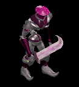 | 両手剣(300) | ステッキ(200) | 状態異常回復2(80) | 足(170) | 槍投擲機(150) | 腕刺青(150) | 鎌(300) | |||
| メタルゴーレムEx | 神獣 | セミ3 | ||||||||
 | 両手剣(800) | スリング(530) | 状態異常回復2(200) | 足(440) | 槍投擲機(400) | 腕刺青(160) | 鎌(800) | |||
| ダイヤゴーレムEx | 神獣 | ボス1 | ||||||||
 | 両手剣(1200) | 鈍器(800) | 状態異常回復2(300) | 足(670) | 冠(600) | 腕刺青(170) | 鎌(1200) | |||
| アークリッチZin | アンデット | ボス3 | ||||||||
| 杖(1200) | 投擲(800) | 状態異常回復2(300) | グローブ(670) | 冠(600) | 宝石(480) | 本(1200) | |||
| ソーサラーZin | 人間 | セミ1 | ||||||||
| 杖(650) | スリング(430) | 状態異常回復2(160) | 職業鎧(360) | 首(330) | 能力向上2(260) | 本(650) | |||
| エクソシストZin | 人間 | 一般3 | ||||||||
| 鈍器(1560) | 翼(1040) | 状態異常回復2(390) | 職業鎧(870) | 冠(780) | 十字架(190) | 水晶(1040) | |||
| ダークプリーストZin | 人間 | セミ2 | ||||||||
| 鈍器(750) | 翼(500) | 状態異常回復2(190) | 職業鎧(420) | 首(380) | 十字架(210) | 水晶(500) | |||
| レッドアイ法術師Zin | 人間 | ボス1 | ||||||||
| ステッキ(1000) | 杖(670) | 状態異常回復2(250) | マント(560) | 冠(500) | ブローチ(210) | 本(670) | |||
| オーガゼネラルZin | 悪魔 | ボス2 | ||||||||
| 鈍器(1100) | 杖(730) | 状態異常回復2(280) | 鎧(610) | イヤリング(550) | 能力向上1(440) | 本(730) | |||
| ゴートマンZin | 悪魔 | 一般1 | ||||||||
| 笛(1210) | 鈍器(810) | 状態異常回復2(300) | マント(670) | 冠(610) | 能力向上1(480) | ||||
| ホーンドZin | 悪魔 | セミ1 | ||||||||
| ステッキ(650) | 翼(430) | 状態異常回復2(160) | マント(360) | 手首(330) | 宝石(260) | 水晶(430) | |||
| ヒュージタートルZin | 動物 | 一般2 | ||||||||
| ステッキ(1380) | 杖(920) | 状態異常回復2(350) | 鎧(770) | 冠(690) | 能力向上2(550) | 本(920) | |||
| 巨大モグラZin | 動物 | 一般4 | ||||||||
| 鞭(1200) | 杖(800) | 状態異常回復2(300) | グローブ(670) | 指輪(600) | 能力向上1(480) | 本(800) | |||
| 北極熊Zin | 動物 | セミ1 | ||||||||
| 両手剣(650) | 鞭(430) | 状態異常回復2(160) | 鎧(360) | イヤリング(330) | 宝石(260) | 鎌(650) | |||
| ゴーレムZin | 神獣 | 一般2 | ||||||||
| 両手剣(1380) | 杖(920) | 状態異常回復2(350) | 足(770) | 爪(690) | 腕刺青(130) | 鎌(1380) | 本(920) | ||
| クレイゴーレムZin | 神獣 | 一般3 | ||||||||
| 両手剣(1560) | 杖(1040) | 状態異常回復2(390) | 足(870) | 槍投擲機(780) | 腕刺青(140) | 鎌(1560) | 本(1040) | ||
| ロックゴーレムZin | 神獣 | 一般4 | ||||||||
| 両手剣(1200) | ステッキ(800) | 状態異常回復2(300) | 足(670) | 槍投擲機(600) | 腕刺青(150) | 鎌(1200) | ||||
| メタルゴーレムZin | 神獣 | セミ3 | ||||||||
| 両手剣(900) | スリング(600) | 状態異常回復2(230) | 足(500) | 槍投擲機(450) | 腕刺青(160) | 鎌(900) | |||
| ダイヤゴーレムZin | 神獣 | ボス1 | ||||||||
| 両手剣(1000) | 鈍器(670) | 状態異常回復2(250) | 足(560) | 冠(500) | 腕刺青(170) | 鎌(1000) | |||
| ジャイアント骸骨 Zin | アンデット | 一般4 | ||||||||
 | 宝石(30) | 状態異常回復2(50) | 腕刺青(90) | 肩刺青(130) | ステッキ(170) | HP回復(200) | ||||
| バイキングヘッド1 Zin | アンデット | セミ2 | ||||||||
 | 冠(80) | 状態異常回復2(140) | 腕刺青(250) | 十字架(360) | ステッキ(470) | 杖(550) | 本(550) | |||
| デスマスク3 Zin | アンデット | ボス2 | ||||||||
| 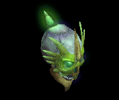 | 鍵(270) | 状態異常回復2(450) | 十字架(810) | 職業鎧(1170) | 状態異常回復1(1530) | HP回復(1800) | ||||
| アンデッド魔法師4 Zin | アンデット | ボス1 | ||||||||
 | 指輪(150) | 状態異常回復2(250) | 弾(450) | 手首(650) | 矢(850) | グローブ(1000) | 魔弾(850) | |||
| アンデッドライト1 Zin | アンデット | セミ1 | ||||||||
 | 鍵(50) | 状態異常回復2(90) | 帰還(160) | CP回復(230) | 矢(300) | イベント(350) | 魔弾(300) | |||
| アンデッドロック Zin | アンデット | 一般4 | ||||||||
 | 鍵(30) | 状態異常回復2(50) | 弾(90) | 手首(130) | 矢(170) | HP回復(200) | 魔弾(170) | |||
| ボーンキメラ1 Zin | アンデット | セミ1 | ||||||||
 | 能力向上2(50) | 状態異常回復2(90) | 帰還(160) | 能力向上2(230) | 槍投擲機(300) | イベント(350) | ||||
| ボーンキメラ4 Zin | アンデット | ボス2 | ||||||||
 | 片手剣(270) | 状態異常回復2(450) | 牙(810) | 職業鎧(1170) | 槍投擲機(1530) | 兜・帽子(1800) | クロー(270) | 双剣(810) | ||
| ブルーエリゲイト2 Zin | アンデット | セミ3 | ||||||||
| 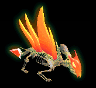 | 片手剣(110) | 状態異常回復2(180) | CP回復(320) | 職業鎧(460) | 槍投擲機(600) | 兜・帽子(700) | クロー(110) | |||
| 装甲ボーンキメラ3 Zin | アンデット | ボス2 | ||||||||
 | 片手剣(270) | 状態異常回復2(450) | 腕刺青(810) | 職業鎧(1170) | 槍投擲機(1530) | 兜・帽子(1800) | クロー(270) | |||
| ハイエルフ2 Zin | 人間 | セミ2 | ||||||||
 | 能力向上2(140) | 状態異常回復2(410) | 腕刺青(280) | 十字架(220) | 槍投擲機(60) | 兜・帽子(80) | ||||
| エルフガーディア Zin | 人間 | セミ1 | ||||||||
 | 片手剣(90) | 状態異常回復2(260) | 足(180) | 十字架(140) | 槍投擲機(40) | CP回復(50) | クロー(90) | |||
| シーク守護者2 Zin | 人間 | セミ3 | ||||||||
| 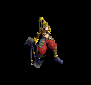 | 鍵(180) | 状態異常回復2(530) | スリング(350) | 鎧(280) | 腰(70) | 翼(110) | 水晶(110) | |||
| 逃亡ハンター3 Zin | 人間 | ボス1 | ||||||||
 | 宝石(250) | 状態異常回復2(750) | 両手剣(500) | CP回復(400) | 鞭(100) | イベント(150) | 鎌(500) | |||
| 狂魔(狂った悪魔…)2 Zin | 悪魔 | セミ2 | ||||||||
| 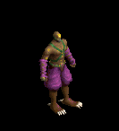 | 片手剣(360) | 状態異常回復2(440) | スリング(180) | 能力向上1(110) | 矢(60) | 兜・帽子(30) | クロー(360) | 魔弾(60) | ||
| 古代悪魔4 Zin | 悪魔 | ボス3 | ||||||||
| 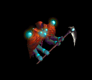 | 指輪(1560) | 状態異常回復2(1920) | 両手剣(790) | 手首(480) | 状態異常回復1(240) | グローブ(120) | 鎌(790) | |||
| サキュバス3 Zin | 悪魔 | ボス2 | ||||||||
 | 鎧(1170) | 状態異常回復2(1440) | 足(590) | 笛(360) | ステッキ(180) | CP回復(90) | ||||
| ペンティライダー2 Zin | 悪魔 | セミ3 | ||||||||
 | 投擲(460) | 状態異常回復2(560) | CP回復(230) | 能力向上1(140) | 肩刺青(70) | 翼(40) | 水晶(40) | |||
| バッタ悪魔4 Zin | 悪魔 | ボス2 | ||||||||
| 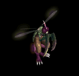 | 投擲(1170) | 状態異常回復2(1440) | CP回復(590) | 槍(360) | 腰(180) | 翼(90) | 箒(360) | 水晶(90) | ||
| パンプキンヘッド Zin | 悪魔 | 一般4 | ||||||||
 | 指輪(130) | 状態異常回復2(160) | 帰還(70) | 能力向上1(40) | 腰(20) | グローブ(10) | ||||
| エルダーパンプキン2 Zin | 悪魔 | ボス1 | ||||||||
 | 指輪(650) | 状態異常回復2(800) | 腕刺青(330) | 能力向上1(200) | 腰(100) | グローブ(50) | ||||
| ルーンモンキー1 Zin | 動物 | ボス2 | ||||||||
 | 冠(630) | 状態異常回復2(450) | 帰還(360) | 能力向上1(270) | 矢(180) | 翼(90) | 水晶(90) | 魔弾(180) | ||
| マウンテン戦士1 Zin | 動物 | セミ2 | ||||||||
 | 鍵(190) | 状態異常回復2(140) | 腕刺青(110) | 能力向上1(80) | 矢(60) | 翼(30) | 水晶(30) | 魔弾(60) | ||
| ウィングコング3 Zin | 動物 | ボス2 | ||||||||
 | 能力向上2(630) | 状態異常回復2(450) | 牙(360) | 職業鎧(270) | 矢(180) | 翼(90) | 双剣(360) | 水晶(90) | 魔弾(180) | |
| 蛙2 Zin | 動物 | セミ3 | ||||||||
| 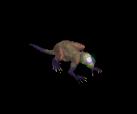 | 投擲(250) | 状態異常回復2(180) | 足(140) | 鎧(110) | 槍投擲機(70) | 杖(40) | 本(40) | |||
| ハリネズミカエル3 Zin | 動物 | ボス2 | ||||||||
 | 両手剣(630) | 状態異常回復2(450) | 足(360) | 槍(270) | 槍投擲機(180) | CP回復(90) | 鎌(630) | 箒(270) | ||
| カメレオン1 Zin | 動物 | セミ1 | ||||||||
 | 能力向上2(120) | 状態異常回復2(90) | スリング(70) | 鞭(50) | 弓(40) | 盾(20) | 銃(40) | |||
| ラジエータカメ Zin | 動物 | 一般4 | ||||||||
 | 冠(70) | 状態異常回復2(50) | 帰還(40) | 鞭(30) | 弓(20) | 杖(10) | 本(10) | 銃(20) | ||
| 装甲亀 Zin | 動物 | セミ1 | ||||||||
| 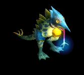 | 冠(120) | 状態異常回復2(90) | スリング(70) | 鞭(50) | 弓(40) | 盾(20) | 銃(40) | |||
| 赤パネルバッファ Zin | 神獣 | 一般4 | ||||||||
| 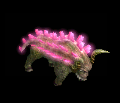 | 指輪(90) | 状態異常回復2(130) | 弾(70) | 鞭(10) | 肩刺青(20) | HP回復(50) | ||||
| エメラルドバッファ3 Zin | 神獣 | ボス2 | ||||||||
 | 指輪(810) | 状態異常回復2(1170) | 帰還(630) | 鞭(90) | 腰(180) | 兜・帽子(450) | ||||
| ブルーウイング1 Zin | 神獣 | セミ2 | ||||||||
 | 杖(250) | 状態異常回復2(360) | 牙(190) | 槍(30) | 弓(60) | 翼(140) | 本(250) | 箒(30) | 双剣(190) | 水晶(140) |
| 使徒2 Zin | 神獣 | ボス1 | ||||||||
| 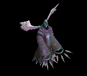 | 鎧(450) | 状態異常回復2(650) | 腕刺青(350) | 能力向上1(50) | 矢(100) | 盾(250) | 魔弾(100) | |||
| 審判官1 Zin | 神獣 | セミ2 | ||||||||
 | 鎧(250) | 状態異常回復2(360) | スリング(190) | 笛(30) | 肩刺青(60) | 盾(140) | ||||
| ライオンヘッド3 Zin | 神獣 | ボス1 | ||||||||
| 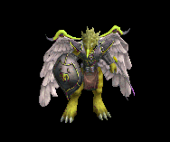 | 投擲(450) | 状態異常回復2(650) | 足(350) | 能力向上1(50) | ステッキ(100) | HP回復(250) | ||||
| 魔術師 | 人間 | セミ1 | ||||||||
| 杖(390) | スリング(260) | 状態異常回復2(100) | 職業鎧(220) | 首(200) | 能力向上2(160) | 本(390) | |||
| 魔術師 Ex | 人間 | セミ1 | ||||||||
| 杖(450) | スリング(300) | 状態異常回復2(110) | 職業鎧(250) | 首(230) | 能力向上2(180) | 本(450) | |||
| レッドアイ大術師 | 人間 | ボス1 | ||||||||
| ステッキ(470) | 杖(310) | 状態異常回復2(120) | マント(260) | 冠(240) | ブローチ(210) | 本(310) | |||
| レッドアイ大術師 Ex | 人間 | ボス1 | ||||||||
| ステッキ(1200) | 杖(800) | 状態異常回復2(300) | マント(670) | 冠(600) | ブローチ(210) | 本(800) | |||
| 象亀 | 動物 | 一般2 | ||||||||
| ステッキ(380) | 杖(250) | 状態異常回復2(100) | 鎧(210) | 冠(190) | 能力向上2(150) | 本(250) | |||
| 象亀 Ex | 動物 | 一般2 | ||||||||
| ステッキ(380) | 杖(250) | 状態異常回復2(100) | 鎧(210) | 冠(190) | 能力向上2(150) | 本(250) | |||
| ベイシャゴーレム Ex | 神獣 | 一般2 | ||||||||
| 両手剣(380) | 杖(250) | 状態異常回復2(100) | 足(210) | 爪(190) | 腕刺青(130) | 鎌(380) | 本(250) | ||
| 泥ゴーレム Ex | 神獣 | 一般3 | ||||||||
| 両手剣(360) | 杖(240) | 状態異常回復2(90) | 足(200) | 槍投擲機(180) | 腕刺青(140) | 鎌(360) | 本(240) | ||
| 石ゴーレム Ex | 神獣 | 一般4 | ||||||||
| 両手剣(300) | ステッキ(200) | 状態異常回復2(80) | 足(170) | 槍投擲機(150) | 腕刺青(150) | 鎌(300) | ||||
| 金属ゴーレム Ex | 神獣 | セミ3 | ||||||||
| 両手剣(800) | スリング(530) | 状態異常回復2(200) | 足(440) | 槍投擲機(400) | 腕刺青(160) | 鎌(800) | |||
| 金剛石ゴーレム Ex | 神獣 | ボス1 | ||||||||
| 両手剣(1200) | 鈍器(800) | 状態異常回復2(300) | 足(670) | 冠(600) | 腕刺青(170) | 鎌(1200) | |||
| デーモン傭兵 | 悪魔 | 一般1 | ||||||||
| 笛(410) | 鈍器(270) | 状態異常回復2(100) | マント(230) | 冠(210) | 能力向上1(160) | ||||
| ホーンドデーモン | 悪魔 | セミ1 | ||||||||
| ステッキ(390) | 翼(260) | 状態異常回復2(100) | マント(220) | 手首(200) | 宝石(160) | 水晶(260) | |||
| デーモン傭兵 Ex | 悪魔 | 一般1 | ||||||||
| 笛(410) | 鈍器(270) | 状態異常回復2(100) | マント(230) | 冠(210) | 能力向上1(160) | ||||
| ホーンドデーモン Ex | 悪魔 | セミ1 | ||||||||
| ステッキ(450) | 翼(300) | 状態異常回復2(110) | マント(250) | 手首(230) | 宝石(180) | 水晶(300) | |||
| 大骸骨 Zin | アンデット | 一般4 | ||||||||
| 宝石(30) | 状態異常回復2(50) | 腕刺青(90) | 肩刺青(130) | ステッキ(170) | HP回復(200) | ||||
| ジャックランタン Zin | 悪魔 | 一般4 | ||||||||
| 指輪(130) | 状態異常回復2(160) | 帰還(70) | 能力向上1(40) | 腰(20) | グローブ(10) | ||||
| モリネル守護神 | 神獣 | ボス1 | ||||||||
| 両手剣(1000) | 鈍器(670) | 状態異常回復2(250) | 足(560) | 冠(500) | 腕刺青(170) | 鎌(1000) | |||
| 大骸骨 Zin | アンデット | 一般4 | ||||||||
| 宝石(30) | 状態異常回復2(50) | 腕刺青(90) | 肩刺青(130) | ステッキ(170) | HP回復(200) | ||||
| ジャックランタン Zin | 悪魔 | 一般4 | ||||||||
| 指輪(130) | 状態異常回復2(160) | 帰還(70) | 能力向上1(40) | 腰(20) | グローブ(10) | ||||
| クレイゴーレムEv | 神獣 | 一般3 | ||||||||
| 両手剣(1560) | 杖(1040) | 状態異常回復2(390) | 足(870) | 槍投擲機(780) | 腕刺青(140) | 鎌(1560) | 本(1040) | ||
| エクソシストEv | 人間 | 一般3 | ||||||||
| 鈍器(1560) | 翼(1040) | 状態異常回復2(390) | 職業鎧(870) | 冠(780) | 十字架(190) | 水晶(1040) | |||
| ロックゴーレムEv | 神獣 | 一般4 | ||||||||
| 両手剣(1200) | ステッキ(800) | 状態異常回復2(300) | 足(670) | 槍投擲機(600) | 腕刺青(150) | 鎌(1200) | ||||
| メタルゴーレムEv | 神獣 | セミ3 | ||||||||
| 両手剣(900) | スリング(600) | 状態異常回復2(230) | 足(500) | 槍投擲機(450) | 腕刺青(160) | 鎌(900) | |||
| アークリッチEv | アンデット | ボス3 | ||||||||
| 杖(1200) | 投擲(800) | 状態異常回復2(300) | グローブ(670) | 冠(600) | 宝石(480) | 本(1200) | |||
| アンデッドライトSp | アンデット | セミ1 | ||||||||
 | 鍵(50) | 状態異常回復2(100) | 帰還(150) | CP回復(200) | 矢(300) | イベント(400) | 魔弾(300) | |||
| ペンティライダー2 Sp | 悪魔 | 一般4 | ||||||||
| 投擲(800) | 状態異常回復2(500) | CP回復(400) | 能力向上1(400) | 肩刺青(600) | 翼(500) | 水晶(500) | |||
| ジャックランタン4 Sp | 悪魔 | 一般4 | ||||||||
 | 指輪(1300) | 状態異常回復2(1500) | 帰還(700) | 能力向上1(400) | 腰(200) | グローブ(100) | ||||
| パンプキンヘッドSp | 悪魔 | 一般4 | ||||||||
| 指輪(1300) | 状態異常回復2(1500) | 帰還(700) | 能力向上1(400) | 腰(200) | グローブ(100) | ||||
| 覚醒ボーンキメラZin | アンデット | セミ1 | ||||||||
 | 能力向上2(50) | 状態異常回復2(90) | 帰還(160) | 能力向上2(230) | 槍投擲機(300) | イベント(350) | ||||
| 覚醒パンプキンZin | 悪魔 | セミ1 | ||||||||
 | 指輪(130) | 状態異常回復2(160) | 帰還(70) | 能力向上1(40) | 腰(20) | グローブ(10) | ||||
| 大骸骨 Sp | アンデット | 一般4 | ||||||||
| 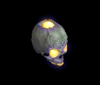 | 宝石(30) | 状態異常回復2(50) | 腕刺青(90) | 肩刺青(130) | ステッキ(170) | HP回復(200) |